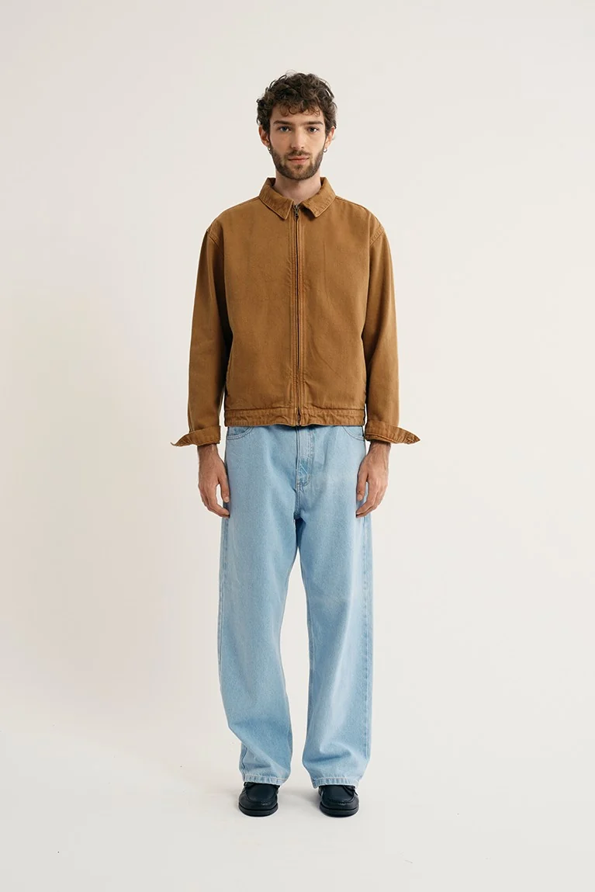
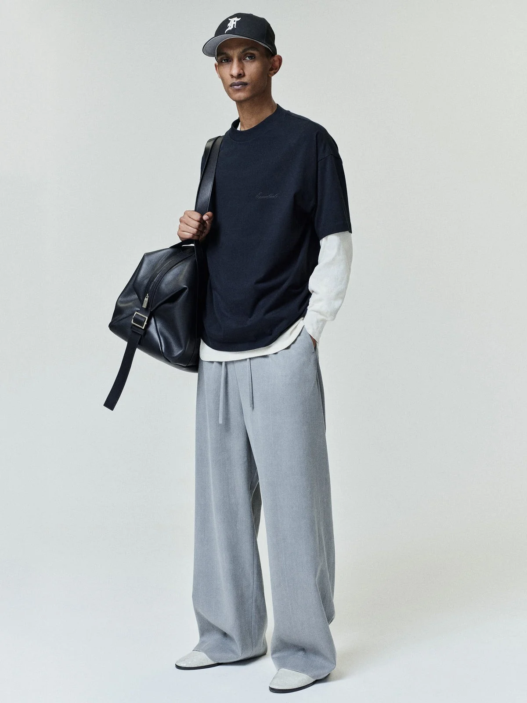
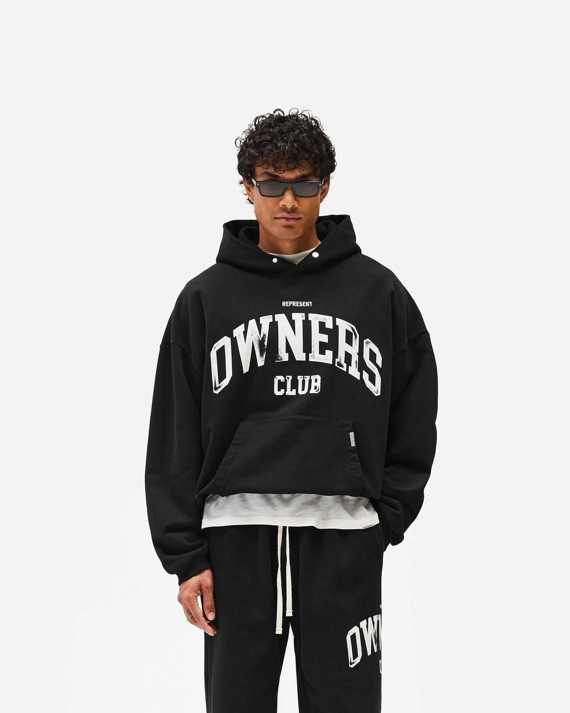

CARNAN / STANDARD
core vira
família.
a Standard reúne tees com fits distintos, jeans e jaquetas. uma base recorrente pode crescer entre construção, categoria e nível de produto.
FONTE [07] ↗
RAW DATA CLUB / APPROVE
PRODUCT READ / 2026
agora a oportunidade é fazer esses fits
virarem memória de marca.
quando fui olhar o catálogo, uma coisa ficou clara: Huge, Box e Core já dão nomes a jeitos diferentes de construir a peça.
a pergunta é o quanto esses nomes podem virar reconhecimento.
HUGE / DESCRIÇÃO OFICIAL
corpo amplo e solto, comprimento um pouco mais curto, mangas até o cotovelo e ombros deslocados.
VER A PEÇAPasse pelos fits ou toque para ver no corpo. Fotos em escalas distintas; as descrições não substituem uma comparação de medidas.
e isso continua
quando entra collab.
Huge aparece em Only II e Texaco. Core aparece em Texaco e Corinthians. a parceria muda, mas a modelagem continua sendo nomeada.
PRODUTOS E FONTES [01–06] ↗a pergunta talvez não seja criar mais uma modelagem. é decidir quais delas merecem ser repetidas até ganhar significado próprio.
não é repetir a mesma peça pra sempre.
é deixar claro o que pode mudar
sem perder aquilo que alguém reconhece.

no Classic Fit, a própria marca fala em proporções características da Fear of God.
FONTE [11] ↗
Oversized 2.0 nomeia uma versão redefinida, com corpo relaxado e cintura mais fechada.
FONTE [12] ↗qual construção vale repetir?
como vender a peça, além da arte?
qual base conversa com cada parceria?
que construção pode sustentar outro nível de produto?
talvez o valor esteja menos em ter mais fits
e mais em fazer alguns deles significarem alguma coisa.
 RAW DATA CLUB
RAW DATA CLUBeu criei a RDC pra fazer esse tipo de leitura. olhar produto, catálogo, preço, histórico e mercado e tentar entender onde existe uma decisão que pode fortalecer a marca.
isso aqui é só um recorte. se fizer sentido, dá pra aprofundar nos fits da Approve, collabs e referências específicas.
EXPLORE RAW DATA CLUB